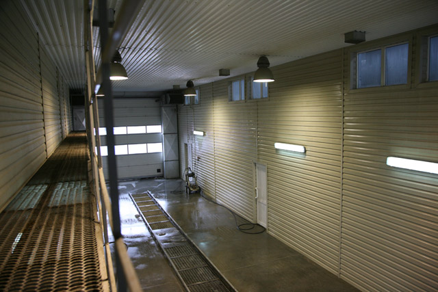
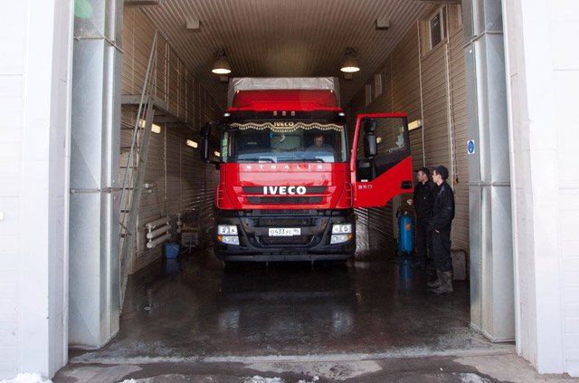

Специальной технике ежедневно приходится работать в условиях сильного запыления, и внешняя чистота машины отходит на последний план. Главное для грузовых авто - поддержание функциональности, поскольку постоянное воздействие грязевых отложений угрожает именно исправности узлов. Грузовая мойка значительно продлевает срок эксплуатации машины, существенно снижая износ деталей и агрегатов. Чтобы грузовая мойка была проведена на должном уровне, необходимо использовать специальное оборудование.
Грузовая мойка способна очистить любую технику, включая негабаритную, в том числе экскаваторы, бульдозеры и большемерные краны. Затраты на грузовую мойку с лихвой окупаются за счет уменьшения расходов на эксплуатацию и содержание техники. При грузовой мойке машин, имеющих отношение к пищевой промышленности, следует использовать специальные методы очистки. Простая грузовая мойка для машин такого класса не подойдет, поскольку требует, в первую очередь, своеобразной дезинфекции автомобиля.
Для техники, перевозящей легковоспламеняющиеся и опасные грузы, грузовая мойка должна проводиться вместе с проверкой готовности машины к работе.
Грузовая мойка осуществляется бесконтактным способом с помощью высокотехнологичных пенных составов, которые позволяют отмыть сильные загрязнения (рамы, кузова, мостов, деталей подвески и др.). Для чистки лакокрасочного покрытия кабин используется специальная щадящая пена.
Наномойка Антидождь Инновационный автошампунь Полировка «Жидкое стекло»